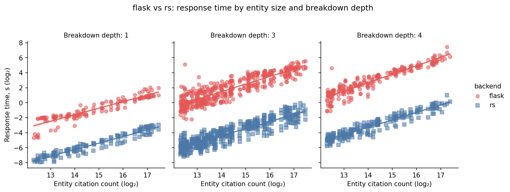
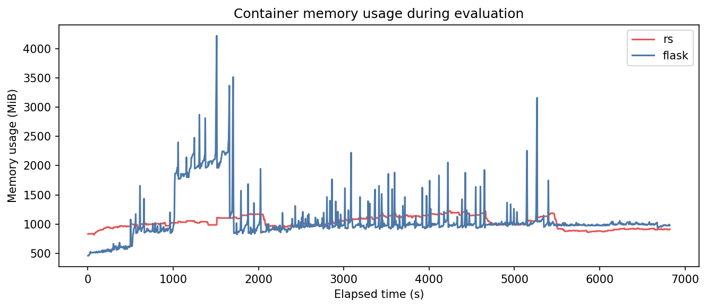
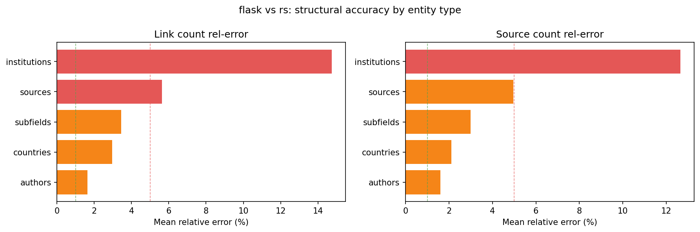
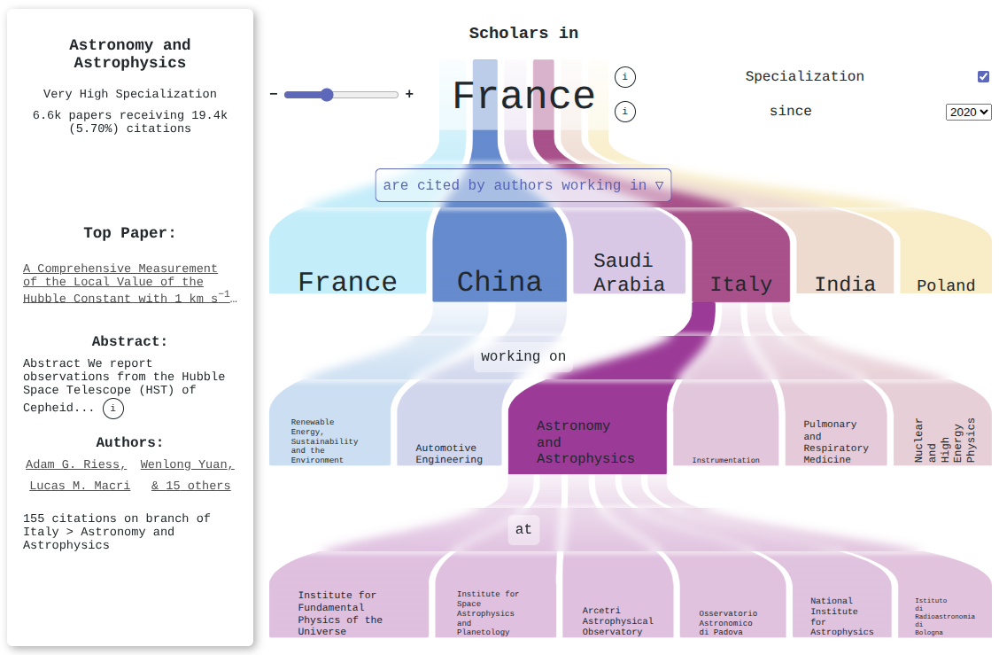

Data-specific compilation for real-time citation-network exploration
A shared starting point for designing the conference poster — the core message, the three
things worth showing off, the real figures, and a pile of visual ideas to react to.
Nothing here is final. It's a board to point at.
Venue · ICWE 2026 (demo track)Author · Endre M. BorzaAffiliation · Center for Collective Learning, Corvinus UniversityLive · rankless.org
How to read this document
This is a mood board, not a layout. It collects everything we might
want on the poster so we can decide together what stays. It's deliberately over-stuffed
— we trim later.
Two things matter most: the message (what a passer-by should take away
in 5 seconds) and the three content pillars that back it up. The brand
look is a given — it's your call how far to push it. Everything labelled
DESIGNER NOTE is a practical pointer;
everything in the idea lists is a "could be", not a "must".
The north star
One idea the poster must land
A new, genuinely different way of building a data web service —
compiling the data itself into the program — turns a problem that used to
need a database cluster into something a single ordinary computer answers
instantly, on a billion-edge citation graph.
Novel
A technique, not just an app
The headline isn't "a website about citations." It's a reusable architectural pattern —
data-specific compilation — that happens to be demonstrated on scholarly data.
Measurable
Numbers, not adjectives
The benefit is quantified against a real, fairly-built database baseline:
~65× faster, 3.4× less memory. These numbers should be
impossible to miss.
Tangible
You can see what it buys
The payoff is visible: rich, multi-level breakdowns of
1.7 billion citations that redraw instantly in the browser. Show the
pretty thing it makes possible.
Designer note · tone
Confident and clean, not loud-startup. The audience is researchers and web engineers. The
poster should feel like a precise instrument — think
scientific, spectral, a little futuristic — earning its claims rather than shouting
them.
I The technique
Explaining data-specific compilation without jargon
This is the hard one to draw, and the most important. We need a picture a non-programmer
gets in a glance:
most services think hard every time you ask a question; Rankless does the thinking once,
ahead of time, and bakes the answers' path straight into the program.
Analogies to pick from
One of these (or a blend) could become the central metaphor of this panel. We don't need all
of them — they're here to choose from.
Analogy A · the favourite
Memorised route vs. GPS recalculating every trip
A database is a GPS that re-plans the whole route from scratch for every single trip,
even when you drive the same roads daily. Rankless has the route burned into muscle
memory — it just goes. No re-planning tax.
Analogy B
A key cut for one lock vs. a fumbling master key
A general database is a master key that has to feel its way into any lock. Rankless cuts
one perfect key for exactly this dataset — it turns instantly because it was made to
fit.
Analogy C
A printing plate vs. handwriting each copy
The build pipeline studies the data and casts a "printing plate" (the compiled binary).
After that, stamping out an answer is near-instant — versus a database re-writing the
page by hand every time.
Analogy D
Tailored suit vs. off-the-rack
General databases fit everything passably. Rankless is tailored to this dataset's exact
measurements — every byte sized to fit — so nothing is wasted and nothing snags.
Concept diagram 1 — the two paths
Rough sketch of the comparison the panel could draw: the same question, two routes. The
database route is a long assembly line of generic steps repeated per query; the Rankless
route is a short, direct walk through data already shaped to answer.
Same question, two routes. Top: a generic assembly line repeated for every query. Bottom:
a short, direct walk — the heavy thinking already compiled away.
Concept diagram 2 — the data's shape becomes the program
The other half of the story: where the cleverness moves to. A build-time pipeline
reads the dataset's structure and
writes a custom program and binary layout for it. The shape of the data
literally becomes code.
The expensive thinking moves left — to a one-time build — leaving a lean binary
that a single server runs.
Designer note · the money shot
If one image carries this panel, it's the contrast in diagram 1: a
long, repeating, generic pipeline versus a
single direct stroke. Consider showing the database path faded/grey and the
Rankless path in full spectrum — visually, "all that machinery, gone."
Animate-then-freeze: if there's a digital screen near the poster, an animated loop
of the two paths racing would be devastatingly effective. The poster shows the freeze
frame.
"Where did the work go?" A small clock/hourglass icon on the build step and a
feather on the serve step — the cost is paid once, up front.
Honest jargon, defined once: the term data-specific compilation should
appear, big, with a one-line plain definition beneath it. It's the thing we want people to
remember and search later.
II The results
Measurable, significant benefits — made loud
The proof is a controlled head-to-head against a properly-built PostgreSQL + Flask baseline,
over 792 real hierarchical queries across 5 entity types. These numbers are
the spine of the poster's credibility — they should be huge.
65×
faster total query time 98 s vs 6 402 s
3.4×
less peak memory 1 225 vs 4 222 MiB
~124 ms
average per deep query interactive, live
1
commodity server no cluster, no GPU
Designer note · the hero number65× is the single most quotable figure. It could be the biggest thing on
the entire poster after the title — set in the spectrum gradient, with the small print (792 queries, fair baseline) tucked underneath so it reads as rigorous, not hand-wavy.
The real figures (from the paper)
These are the actual plots generated for the ICWE paper. They're shown here as reference —
see each caption for how they might be redrawn in the poster's palette and at poster scale.

Speed, across the board. Each dot is a query; blue (Rankless) sits ~1–2 orders of
magnitude below red (database) at every entity size and breakdown depth — the gap
doesn't close as queries get harder.
Redraw note
Recolour to brand: Rankless in cyan/spectrum, baseline in a muted grey-red. The log
axes need a plain-language label ("bigger entities →", "slower ↑"). Consider
simplifying to the trend bands for poster distance.

Calm vs. spiky memory. Rankless (red line here) holds a flat, predictable
footprint; the database (blue) spikes violently toward 4+ GiB. A great "steady hand"
visual.
Redraw note
Swap colours so Rankless is the calm spectrum line and the baseline is the jagged grey
one. The flat-vs-jagged contrast is the whole point — exaggerate legibility, not the
data.

Fast and correct. Results were validated against the database:
most breakdowns match within a couple of percent (mean relative error). The largest gaps
are journal-level cases where Rankless intentionally applies extra journal-quality
adjustments.
Use note
This is the "we're not cheating" panel — important but secondary. Could shrink to a
single honest line:
"20 of 32 configurations match the database at r > 0.99."
The angle ICWE will love
Less hardware = less energy
ICWE 2026 explicitly cares about performant and sustainable web
systems. Replacing a database cluster with a single compiled binary isn't just faster —
it's a concrete, lower-energy web architecture. Worth a small panel:
"a database cluster's worth of work, on one box."
Visual: a rack of servers greyed out, one server lit in spectrum.
Stat reuse: 3.4× less peak memory ↔ smaller machine ↔ less power.
Designer note · chart honesty
All three plots can be redrawn cleaner for print, but keep the data faithful — same numbers,
better legibility. Bigger fonts, fewer gridlines, plain-language axis hints, brand colours.
Don't invent trends.
III What it enables
The payoff: billion-citation breakdowns you can actually explore
All that engineering buys one thing: you can take 1.7 billion citations and
slice them, live, into a deep hierarchy — country → field → institution — and it redraws
instantly. This panel should be the beautiful part of the poster.

The hero visualization. Papers by scholars in France since 2020, broken down by
citing country → field → institution, with the most-cited paper surfaced on each branch.
This single image proves the claim: a multi-level breakdown over a billion-edge graph,
rendered interactively. This is likely the poster's centrepiece.
The scale behind one screenshot
1.7B
citations
80M
papers
4M
authors
33k
institutions
Plus journals, countries, and a four-level discipline hierarchy (4 domains → 26 fields → 252
subfields → 4 516 topics). Every one of those entities is a queryable starting point.
The family of views (each its own little showcase)
The site renders several complementary visualizations, all hand-drawn SVG. A "gallery strip"
of these along one edge of the poster would say "this is a real, rich tool" at a glance.
flagship
Hierarchical tree
The Sankey-style breakdown above. Configurable at every level; surfaces the top paper
per branch. The interactive reconfiguration is the live demo's "wow."
network
Research space
A field-to-field map built from how often disciplines co-occur — shows an entity's
intellectual neighbourhood.
network
Collaborator graph
Co-authorship network scoped to an author's frequent collaborators (the one place we use
Cytoscape.js).
geo
Geographical impact map
World map of citation flows by country, optionally tinted by specialization vs. a
baseline. Instantly legible to anyone.
comparison
Peers heatmap
An entity against its closest peers — subfield citation heatmap, decade sparkline,
totals. "How do I compare?"
drill-down
Hit-paper treemap
For a standout paper, a treemap of who's citing it. The deepest level of the drill-down.
Screenshots to capture for the final poster
We only have the tree figure on hand. These are the live captures worth grabbing from
rankless.org at high resolution — slots
left here as placeholders for the designer to drop in.
🌍
Geographical impact map
A recognizable country (e.g. France or the US) coloured by citation flow.
🕸️
Research-space network
A visually dense, colourful field network for a well-known institution.
▦
Peers heatmap
A clean subfield heatmap comparing an entity to its peers.
Designer note · invite interaction
The poster's last move should be "go try it." A prominent
QR code to rankless.org turns a poster into a live demo in the visitor's
own hand — search yourself, your university, watch the billion-edge breakdown redraw. Pair
it with a one-line dare: "Find your institution. Under 2 minutes."
QR → rankless.org (place final code)
link the live site
Layout sketches
A few ways the A0 could come together
Loose block sketches, not designs — just to argue about proportions and reading order. A0 is
big (84 × 119 cm portrait); a poster is read top-to-bottom from ~1.5 m away, so the title
and hero number must work at a glance and the detail rewards stepping closer.
Option 1. Message-first portrait
RANKLESS — data-specific compilation
ONE LINE: compile the data → instant billion-edge breakdowns
I · technique (two-path diagram)
65× 3.4×
III · HERO TREE VISUAL (big)
timing
memory
scale 1.7B
author · affiliation · funding logos
QR
Option 2. Hero-image dominant
RANKLESS
FULL-BLEED TREE VISUAL as the backdrop
what it is (1 line + def)
how (mini diagram)
65× faster
3.4× leaner
1 server
author · venue · funding
QR
Option 3. Three explicit pillars
RANKLESS — real-time citation exploration
I TECHNIQUE
two-path diagram + analogy
II RESULTS
65× · 3.4× + charts
III ENABLES
tree + gallery
author · affiliation · funding logos
QR
Designer note · reading order
Whatever the layout: title → one-line claim → hero number → hero visual
should be the first four things the eye hits. Everything else is "lean in closer" detail. A
landscape A0 also works if the venue prefers it — Option 3 adapts cleanly.
Practical brief
Specs & must-haves
Production checklist
Size: A0 — default portrait; confirm orientation with venue.
Charts: redraw the three plots in brand colours (don't just paste the PNGs) —
see redraw notes in Pillar II.
Hero visual: capture the tree figure at the highest resolution the site allows.
QR code: to https://rankless.org, tested live.
Required text & credits
Title: Rankless: Data-Specific Compilation for Real-Time Citation Network
Exploration.
Author: Endre M. Borza · ORCID 0000-0002-8804-4520.
Affiliation: Center for Collective Learning, CIAS, Corvinus University,
Budapest, Hungary.
Venue tag: ICWE 2026 (demo).
Funding line (verbatim): Supported by the Learn Data ERA Chair from the
European Research Executive Agency, funded by the European Union under Horizon Europe
Grant Agreement 101086712.
Logos to source: Corvinus University, Center for Collective Learning, EU /
Horizon Europe / ERC emblem.
Data credit: data from OpenAlex + SCImago.
Designer note · don'ts
No internal jargon beyond the one defined term (data-specific compilation). Don't
crowd it — A0 tempts you to fill every cm; white space at this size reads as confidence.
Don't let the database baseline look strawman-ish; the credibility comes from it being a
fair fight.